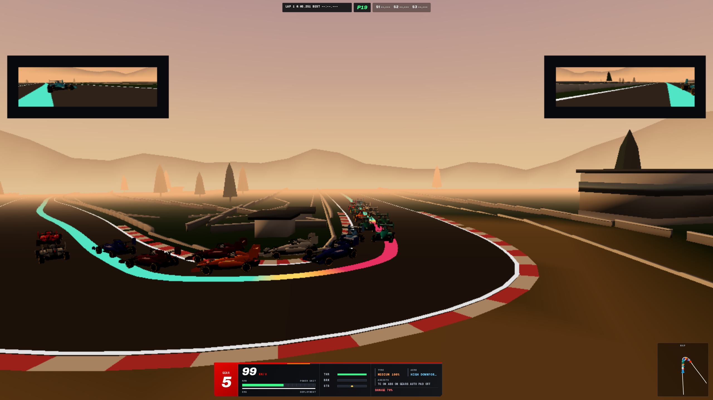
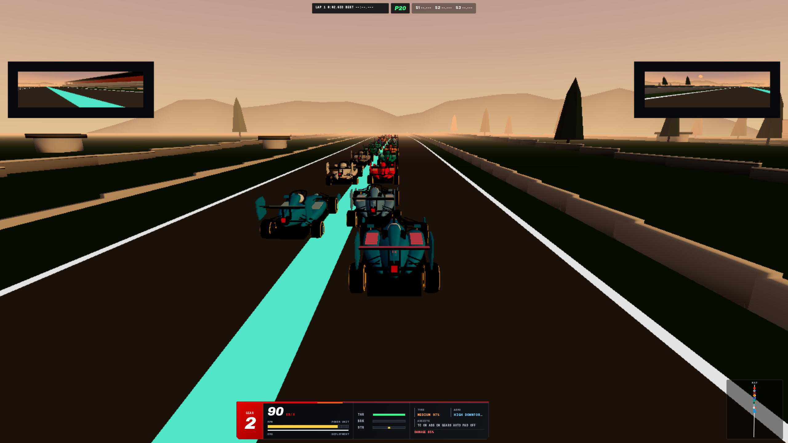
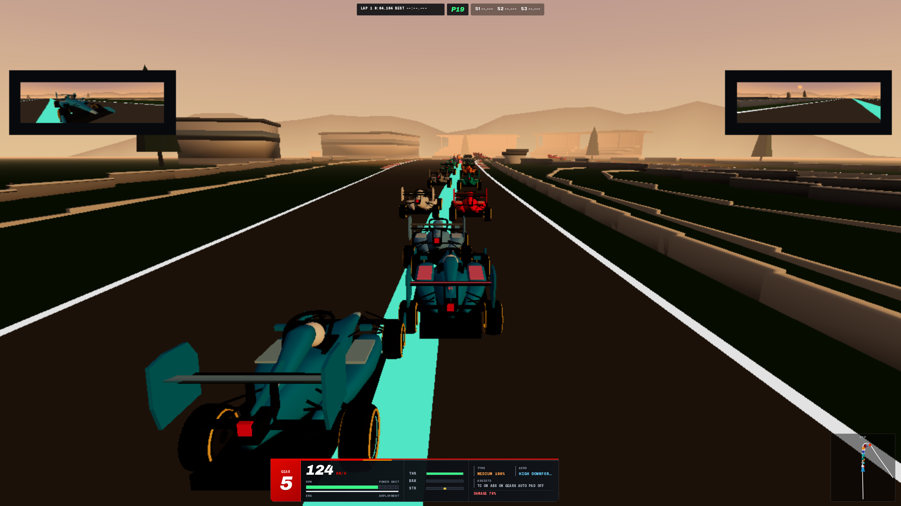
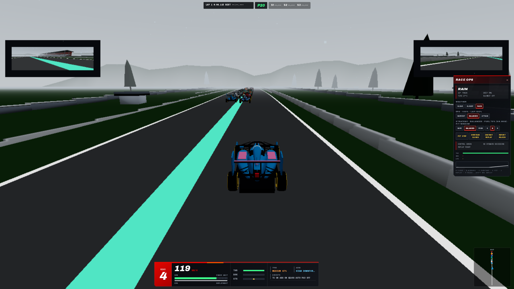
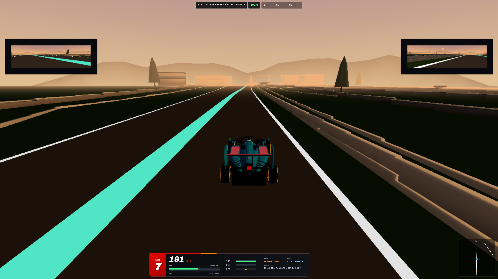

React Three Fiber · Rapier physics · 27 circuits from real GPS centerlines

2026 regulation era · browser formula racing

27 circuits from real GPS centerlines

wheel-to-wheel AI · rookie to ace


React Three Fiber · Rapier physics · 27 circuits from real GPS centerlines